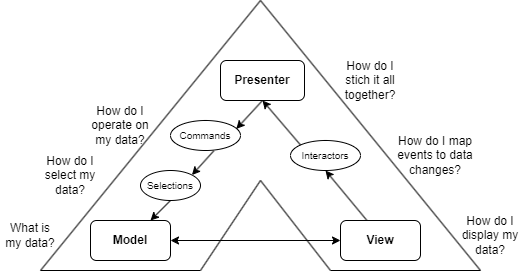
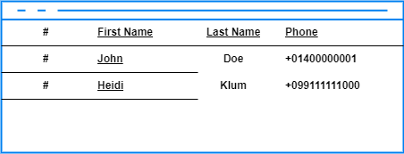
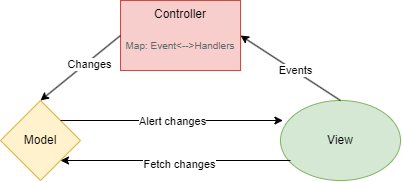
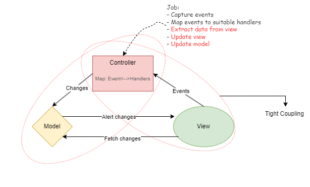
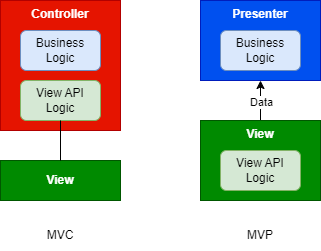

Model View Presenter (MVP) is a pivotal software architecture introduced by Taligent Inc. in 1996. Emerging as an enhancement over the then prevalent Smalltalk programming model, which was built upon the foundations laid by the Model View Controller (MVC) architecture. In this article, we delve into the essence of MVP, contextualizing its significance by examining the limitations of still popular Model View Controller (MVC) application programming architecture and also developing a simple MVP app to demonstrate how MVP solves some intrinct limitations of MVC.
Some examples and concepts are directly derived from the 1996 paper[1] published by Mike Potel.

Fig.1: Model View Presenter
Model View Controller
The Model View Controller (MVC) framework stands as a widely embraced approach for crafting diverse applications, offering a clear division of the business logic into three key components: Model, View, and Controller.
The Model bears the responsibility of managing and manipulating data alongside relevant operations, ensuring robust data management within the application.
Meanwhile, the View component serves the crucial role of presenting this data to users, facilitating an intuitive and engaging user interface.
The Controller acts as the intermediary, adeptly handling requests originating from the View and orchestrating corresponding updates within the Model. Communication follows a unidirectional flow from the View to the Controller and from the Controller to the Model. However, the communication between the View and Model is bidirectional, allowing for seamless synchronization. Consequently, any alterations made in the Model reflect in the View, and vice versa.
Simple Example of a MVC app

Consider a practical example of an MVC application: a Phone Book app. In this scenario, the model serves as the structural representation of a phone book record, denoted as PhoneRecord, along with collections of such records. Beyond mere representation, the model encompasses standard methods such as getData and setData to facilitate interaction with this data.
The view component, on the other hand, assumes the responsibility of presenting this data to the user, typically in formats such as tabular records. It acts as the interface through which users interact with the application's functionalities.
In the midst of the model and view lies the controller, serving as the intermediary that maps user-generated events, such as mouse clicks or keyboard inputs like hitting the delete button, to corresponding handlers. These handlers, intrinsic to the controller, orchestrate additional operations such as creating new views to solicit user data or extracting data from existing views, culminating in the application of changes to the model.

Limitations of MVC
While MVC remains a cornerstone framework for developing applications of diverse natures, it grapples with a significant limitation: tight coupling between the controller and view. The controller often becomes excessively reliant on the view to execute its logic, leading to the inclusion of non-business-related operations within the controller's handler body.
Consider an instance within our application where a "Create new record" button triggers an event. The corresponding controller captures this event, initiates a user interface (UI) to collect data, and applies operations to the model upon user confirmation. Here, the controller's dependence on the view becomes evident as it extracts data, such as first name value, from UI components like firstName.getText(). Following data manipulation, the controller again assumes responsibility for updating the view. This intertwining of view-related logic within the controller epitomizes tight coupling.
To address this issue, it becomes imperative to disentangle view-specific logic from the controller. Tight coupling undermines the modularity and flexibility of the codebase, ultimately impeding scalability and maintainability. By mitigating this dependency, developers can foster cleaner code architecture and enhance the extensibility of the application.

Model View Presenter
To address the limitations of the MVC pattern, a separation of concerns between the view, model, and controller becomes imperative. Rather than burdening the controller with tasks beyond request handling, such as event capture and view updates, a more refined approach is warranted. Enter MVP (Model-View-Presenter) architecture, which introduces the notion of segregating the presenter component from the view, thereby adding layers of abstraction to interact with the model.
The concept of MVP architecture was pioneered by Taligent Inc., a subsidiary of IBM, in 1996 [1]. Its fundamental principle revolves around encapsulating data via selections and commands for the model while abstracting the view logic through interactors. In this paradigm, the controller in MVC retains the role of mapping view-generated data to appropriate commands for consumption. This intermediary layer, known as the presenter, assumes a pivotal role in the MVP architecture.
The presenter in MVP architecture serves atop the view, tasked solely with receiving data from the view and applying business logic by invoking suitable commands or handlers. What distinguishes this approach? Consider the scenario where the view API undergoes modifications in the future. Traditionally, such changes would necessitate adjustments within the controller. However, by decoupling the view logic from the controller, the presenter remains insulated from underlying alterations, leaving the responsibility of adapting to changes to the view itself. Consequently, modifications are confined to the view layer, sparing the presenter from unnecessary revisions.
The Presenter of the View

A prominent evolution ushered in by MVP architecture is the abstraction of view logic from the controller, achieved through an additional layer of abstraction over the view. Illustrated in our previous example of the phone book application, the view captures events like clicking on the delete button. Upon event capture, the view gathers pertinent data, such as the ID of the record in the currently selected row, formatting it into a JSON object along with other metadata before passing it to the presenter.
Within the presenter layer, the data is received from the view alongside the interactor object—in our case, the delete button press event. The presenter then leverages this data and interaction event to invoke suitable commands. Upon executing the commands and effecting changes to the model, the model informs the view of the updates, thereby triggering a refresh in the view.
In the MVP architecture, each view possesses its dedicated presenter, offering a tailored approach to handling user interactions. Furthermore, presenters can be reused across multiple views. By abstracting away the underlying intricacies of the view API and focusing solely on events and data manipulation, MVP architecture ensures that the business logic remains insulated from any alterations made to the view.
Model
When developing an MVP application, a critical initial consideration revolves around data. MVP adopts a bottom-up approach, beginning with inquiries regarding data modeling. It systematically addresses questions related to data structures before proceeding to craft suitable presenter logic for data manipulation.
The author of [1] proposes following questions to ask before creating MVP design of the app and it will start with the model.
1. What is my data?
2. How do I select my data?
3. How do I operate on my data?
Once a developer has answered this question and enough model related specifications are in place. They move towards asking question related to view.
4. How do I display my data?
5. What are my events?
6. How do I stich everything together?
Let's build the simple phone book app by asking ourselves these questions.
Part 1: PhoneBook application via MVP
To simplify the process of developing an application using the MVP approach, the creators of MVP have proposed a straightforward framework, breaking down the code into the following segments: IModel, ISelection, ICommand, IPresenter, IInteractor, and IView.
In the part 1 of the build, we'll focus on the model and address the first three questions.
1. What is my data?
The response to this inquiry can be quite straightforward. For instance, the data may consist of a list of CSV strings stored in a file, or it could represent a database containing phone records with attributes such as first name, last name, and phone number. To abstract the underlying raw data implemention we will first start by creating a runtime representation of this data. Below is an example of a Model for a phone book application.

IModel:
public interface IModel {
public List<PhoneRecord> getAllRecords();
public PhoneRecord getRecordWithId(String id);
public boolean createRecord(PhoneRecord record);
public boolean updateRecordWithId(String id, PhoneRecord update);
public boolean deleteRecordWithId(String id);
}
PhoneRecord:
public class PhoneRecord {
private String id;
private String firstName;
private String lastName;
private String phoneNumber;
public PhoneRecord(String row) {
String[] extract = row.split(",");
this.id = extract[0];
this.firstName = extract[1];
this.lastName = extract[2];
this.phoneNumber = extract[3];
}
public PhoneRecord(String id, String firstName, String lastName, String phoneNumber) {
super();
this.id = id;
this.firstName = firstName;
this.lastName = lastName;
this.phoneNumber = phoneNumber;
}
// getters and setters go here ...
}
Additionally, the model is where we can implement data persistence. However, for the sake of simplicity, we have omitted that here.
2. How do I select my data?
Now, the question arises: how do we define the data specification? This question guides us in determining how operations are applied to the dataset. For instance, users might want to delete multiple phone records at once. To accommodate this functionality, we abstract the logic of grouping multiple data records from the model. In our example, we support both single and multiple selections of data from our phone book records.
ISelection:
public interface ISelection {
public List<PhoneRecord> getSelections(IModel model);
}
MultiPhoneRecordSelection:
public class MultiPhoneRecordSelection implements ISelection {
private final List<String> idList;
public MultiPhoneRecordSelection(List<String> ids) {
this.idList = ids;
}
public List<String> getIdList() {
return idList;
}
@Override
public List<PhoneRecord> getSelections(IModel model) {
List<PhoneRecord> records = new ArrayList<>();
for (String id : idList) {
records.add(model.getRecordWithId(id));
}
return records;
}
}
SinglePhoneRecordSelection:
public class SinglePhoneRecordSelection implements ISelection {
private String id;
public SinglePhoneRecordSelection(String id) {
this.id = id;
}
public String getId() {
return id;
}
@Override
public List<PhoneRecord> getSelections(IModel model) {
List<PhoneRecord> list = new ArrayList<>();
list.add(model.getRecordWithId(id));
return list;
}
}
3. How do I operate on my data?
By addressing this question, we can develop top-level APIs for our model. To interact with our model, we require commands that execute specific actions. These commands are abstracted in the ICommand component of the MVP architecture. They take the specific selection provided by the user and enact changes within the model. For our use cases, let's introduce two commands: NewCommand, responsible for creating a new record in the model, and DeleteCommand, which handles the deletion of records from the model.
ICommand:
public interface ICommand {
public void execute(ISelection selection, IModel model);
}
NewCommand:
public class NewCommand implements ICommand {
private PhoneRecord pr;
public NewCommand(PhoneRecord newPhoneRecord) {
this.pr = newPhoneRecord;
}
@Override
public void execute(ISelection selection, IModel model) {
model.createRecord(pr);
}
}
DeleteCommand:
public class DeleteCommand implements ICommand {
@Override
public void execute(ISelection selection, IModel model) {
if (selection == null) {
return;
}
if (selection instanceof MultiPhoneRecordSelection) {
List<PhoneRecord> listToDelete = selection.getSelections(model);
for (PhoneRecord pr : listToDelete) {
model.deleteRecordWithId(pr.getId());
}
} else if (selection instanceof SinglePhoneRecordSelection) {
PhoneRecord pr = selection.getSelections(model).get(0);
model.deleteRecordWithId(pr.getId());
}
}
}
Part 2: PhoneBook application via MVP
By delving with the questions in Part 1 we have solved the modelling problem. Now is the time to establish the view and stitch together the functionalities of view with the model with the help of presenter.
4. How do I display my data?
For demonstration purposes, we will develop a straightforward command-line application to showcase our data. This view will offer users two options: "New" and "Delete" for respective actions. The presenter, seamlessly integrated within the view, will oversee the execution of business logic.
IView:
public interface IView {
public void displayRecords(List<PhoneRecord> records);
public void promptNewRecordCreation();
public void confirmRecordDeletion(List<PhoneRecord> recordsToDelete);
}
PhoneBookView:
public class PhoneBookView implements IView {
private IPresenter presenter;
public PhoneBookView(IPresenter presenter) {
this.presenter = presenter;
}
@Override
public void displayRecords(List<PhoneRecord> records) {
System.out.println("Phone Records:");
for (PhoneRecord record : records) {
System.out.println("ID: " + record.getId() + ", Name: " + record.getFirstName() + " " + record.getLastName()
+ ", Phone: " + record.getPhoneNumber());
}
}
@Override
public void promptNewRecordCreation() {
Scanner scanner = new Scanner(System.in);
System.out.println("Enter new record details:");
System.out.print("First Name: ");
String firstName = scanner.nextLine();
System.out.print("Last Name: ");
String lastName = scanner.nextLine();
System.out.print("Phone Number: ");
String phoneNumber = scanner.nextLine();
PhoneRecord newRecord = new PhoneRecord(null, firstName, lastName, phoneNumber);
presenter.createNewRecordRequested(newRecord);
scanner.close();
}
@Override
public void confirmRecordDeletion(List<PhoneRecord> recordsToDelete) {
System.out.println("Are you sure you want to delete the following records?");
for (PhoneRecord record : recordsToDelete) {
System.out.println("ID: " + record.getId() + ", Name: " + record.getFirstName() + " " + record.getLastName() + ", Phone: " + record.getPhoneNumber());
}
System.out.println("Enter 'yes' to confirm deletion or 'no' to cancel:");
Scanner scanner = new Scanner(System.in);
String response = scanner.nextLine().toLowerCase();
if (response.equals("yes")) {
List<String> recordIds = recordsToDelete.stream().map(PhoneRecord::getId).toList();
presenter.deleteRecordsRequested(recordIds);
} else {
System.out.println("Deletion canceled.");
}
scanner.close();
}
}
5. What are my events?
Events are user generated entities like button pressed, mouse click, key press etc. Interactors primarily feature in UI-rich applications, where users engage with various event generation capabilities. These interactors are captured by the view. Since we're employing a command-line interface, user requests are manually entered, thus obviating the need for an in-depth discussion of interactors. Here, we'll establish a placeholder for explanatory purposes.
IInteractor:
public interface IInteractor {
// Methods for handling user events
}
6. How do I stitch this all together
Finally, we the most crucial question of gathering all the parts together and work towards bringing our application to life. Below is the code that shows how the presenter only works on the data generated by the view and calls appropriate commands.
IPresenter:
public interface IPresenter {
public void onViewAttached(IView view);
public void displayRecordsRequested();
public void createNewRecordRequested(PhoneRecord newRecord);
public void deleteRecordsRequested(List<String> recordIds);
}
PhoneBookPresenter:
public class PhoneBookPresenter implements IPresenter {
private IView view;
private IModel model;
@Override
public void onViewAttached(IView view) {
this.view = view;
this.model = new PhoneRecordModel();
}
@Override
public void displayRecordsRequested() {
List<PhoneRecord> records = model.getAllRecords();
view.displayRecords(records);
}
@Override
public void createNewRecordRequested(PhoneRecord newRecord) {
NewCommand command = new NewCommand(newRecord);
command.execute(null, model);
displayRecordsRequested();
}
@Override
public void deleteRecordsRequested(List<String> recordIds) {
MultiPhoneRecordSelection selection = new MultiPhoneRecordSelection(recordIds);
DeleteCommand command = new DeleteCommand();
command.execute(selection, model);
view.confirmRecordDeletion(selection.getSelections(model));
}
}
Observations
Based on the above demonstration of application development, the following observations regarding MVP become evident:
- In a data-intensive environment, ensuring secure and streamlined access to data is paramount. MVP offers a robust abstraction to achieve this.
- Unlike the typical MVC architecture where the controller often bears the brunt of handling tasks, in MVP, the presenter simply do what a controller should be doing, which is mapping events to handlers.
- Abstracting view API logic from the controller ensures that any future changes in the view won't disrupt the underlying business logic, enhancing maintainability.
- Due to its focus on handling data and events, a presenter can be reused across multiple views, promoting code reusability and scalability.
In conclusion, MVP presents a superior approach and abstraction for application development, providing maintainability.
References
[1] MVP: Model-View-Presenter The Taligent Programming Model for C++ and Java, Mike Potel, 1996